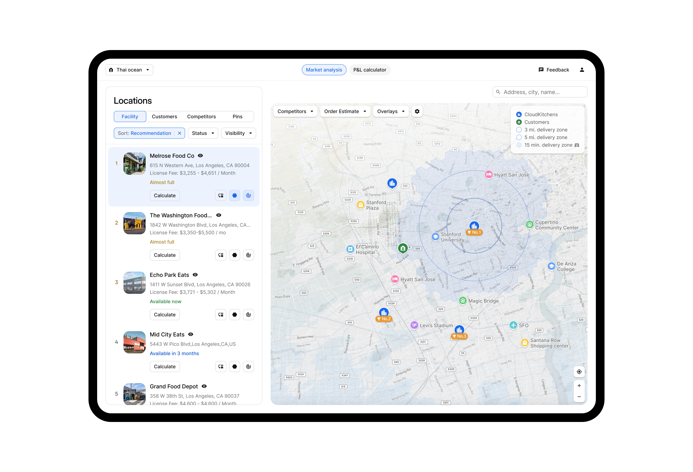
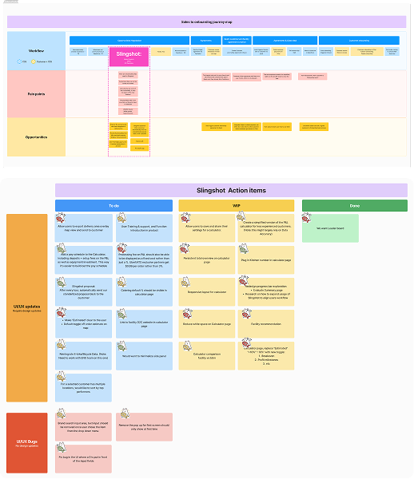
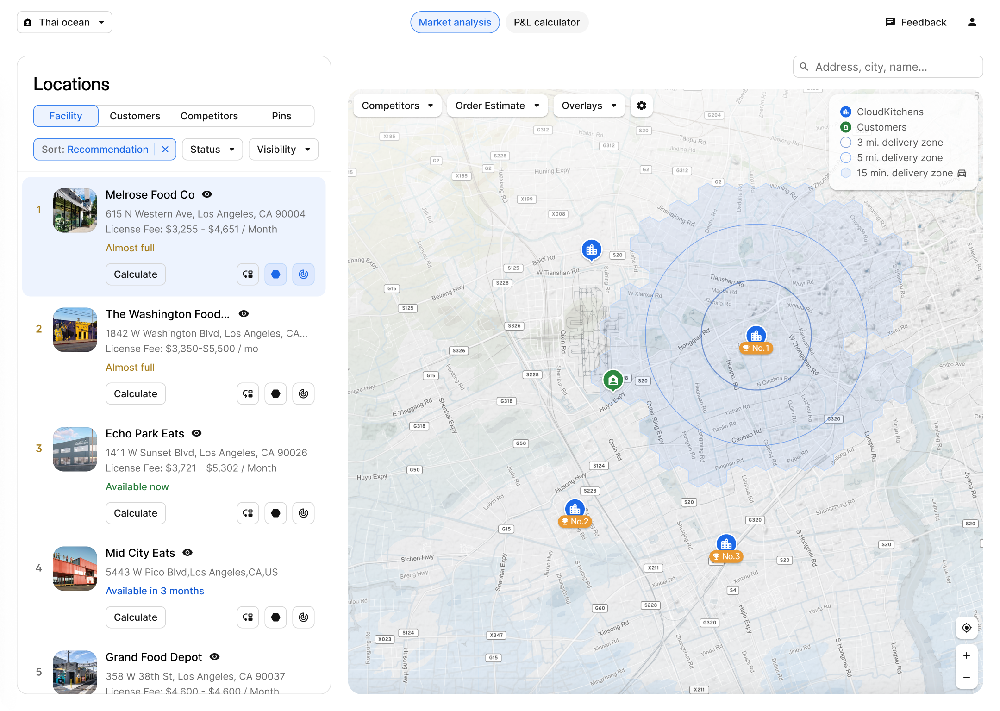
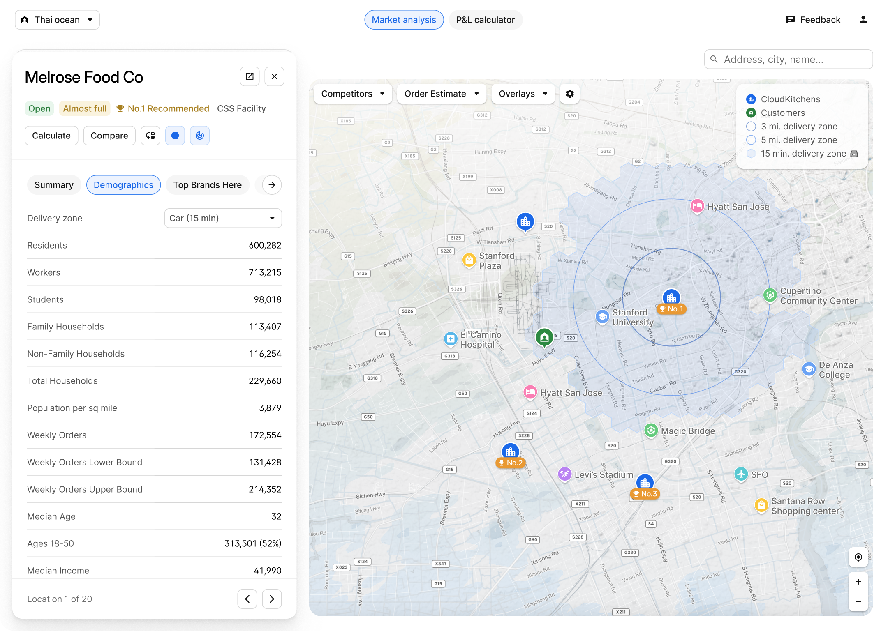
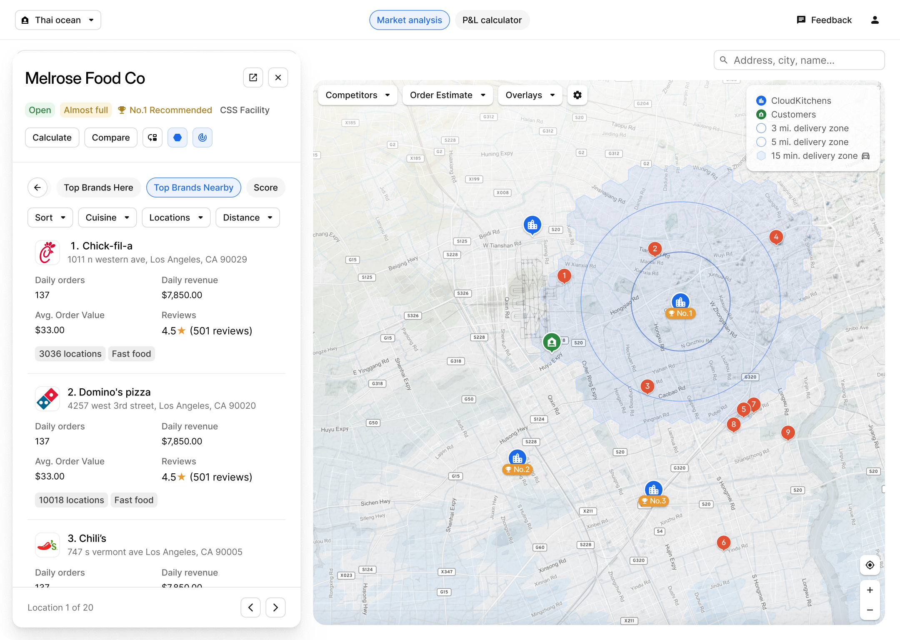
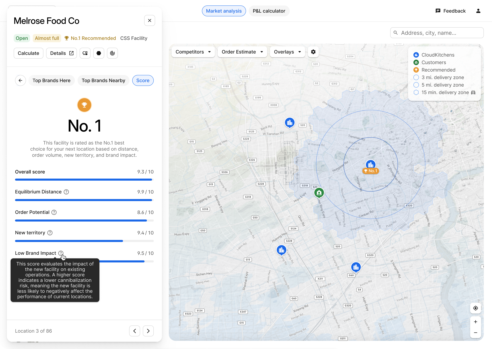
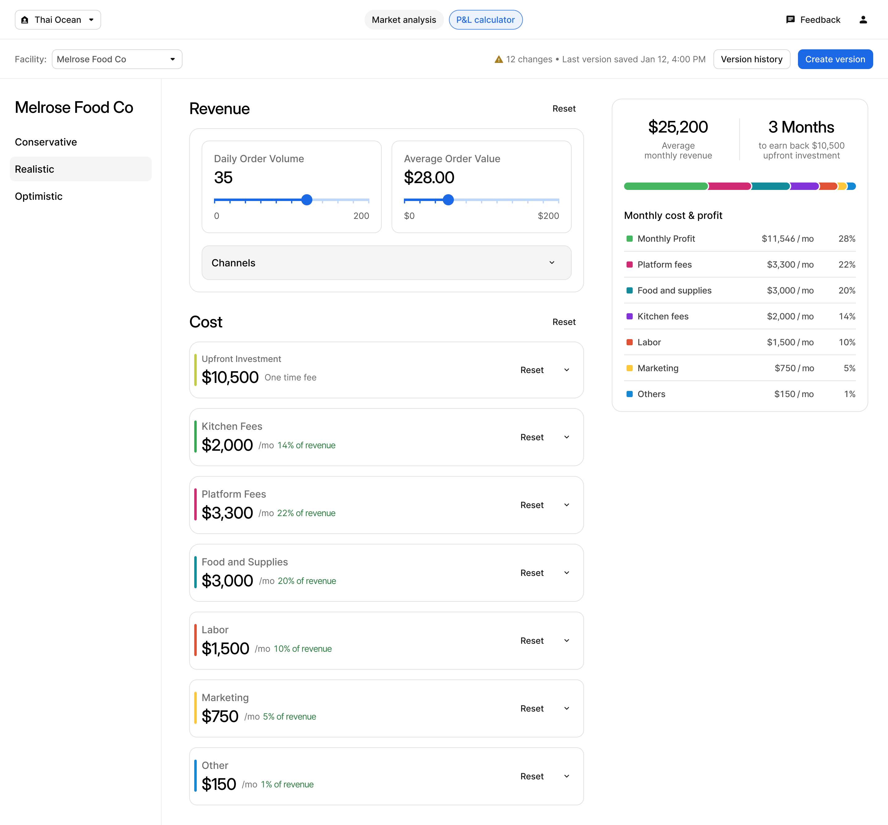
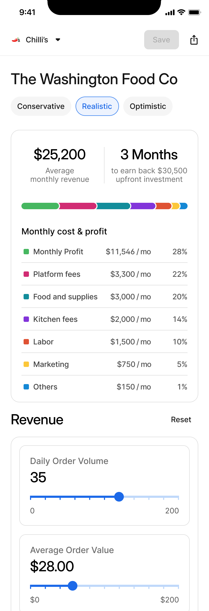
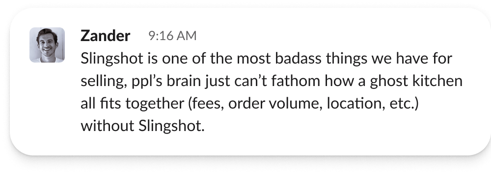

01
Adoption gap
AE adoption was only 70%, and just 5% of closed-won opportunities were powered by Slingshot.
Case study
Slingshot is a tool for market analysis and sales pitching, but adoption among AEs was only 70%. I led discovery with AEs to identify workflow gaps, prioritized key feature improvements, and worked on solutions that expanded its value and usability.

Problem
Slingshot played an important role in market analysis and pitching, but its current workflow support was too narrow to become essential across the broader sales cycle.
01
AE adoption was only 70%, and just 5% of closed-won opportunities were powered by Slingshot.
02
The tool was strong in pitch moments but lacked depth for market evaluation and real deal shaping.
03
Redesign the experience to support AE workflows better and increase both usage and deal impact.
Discovery
Through collaborative sessions, we learned that while Slingshot helped with pitching, it fell short as a comprehensive market analysis tool and didn’t support the real structures AEs negotiate through.
Collaborative jam sessions with AEs to walk through live deal evaluation and pitching workflows.
Market analysis lacked actionable signals that could support confident decision-making.
The calculator didn’t reflect real deal structures, making it hard to use in live conversations.

Design solution
We reframed the challenge around daily utility. Slingshot needed to help AEs decide where to go, what to recommend, and how to negotiate through real scenarios.
Focus 1
Make demand signals, nearby brands, and traffic drivers useful enough to shape recommendations.
Focus 2
Reflect actual deal structures, including multiple scenarios and upfront investment.
Focus 3
Reduce cognitive load so AEs can use the tool fluidly during customer conversations.
Market analysis

Analyze local demographics and demand signals to evaluate market potential.

Reveal nearby traffic drivers that influence customer demand around a facility.

Show the competitive landscape by highlighting strong brands already operating in the area.
Decision layer
Decision support
We moved beyond exploration by helping AEs compare options, surface facility quality, and anticipate internal brand conflicts.
Rank facilities using a composite score based on demand, competition, and brand impact.
Show a facility’s effect on a customer’s current brands to reduce internal deal conflicts.
Support side-by-side comparisons of facilities, brands, and competitors for more tailored pitches.

Calculator redesign
AEs can explore several commercial structures without rebuilding the model from scratch.
The tool now captures real investment terms that matter during negotiation.
Operators receive a customized P&L calculator they can interact with directly.


Results
Post-launch, Slingshot adoption increased significantly, and its share of closed-won contribution rose from 5% to 15%. Teams also shared strong positive feedback about its value in selling.
Usage increased significantly once the product became more useful across the sales workflow.
Closed-won contribution rose from 5% to 15%, showing stronger influence on real outcomes.
AEs described Slingshot as one of the most powerful tools they have for selling complex ghost-kitchen decisions.
